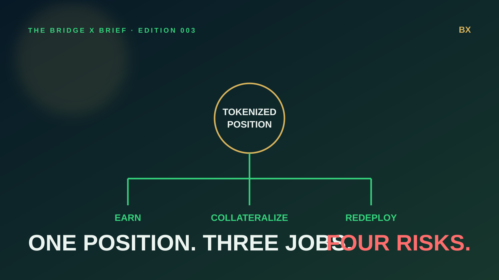
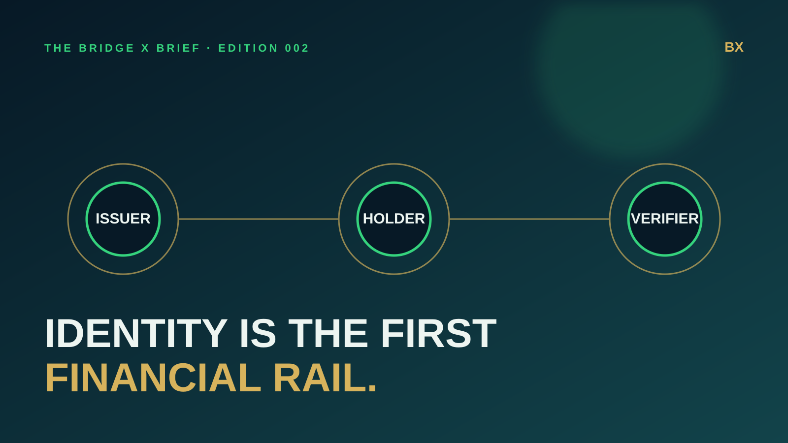
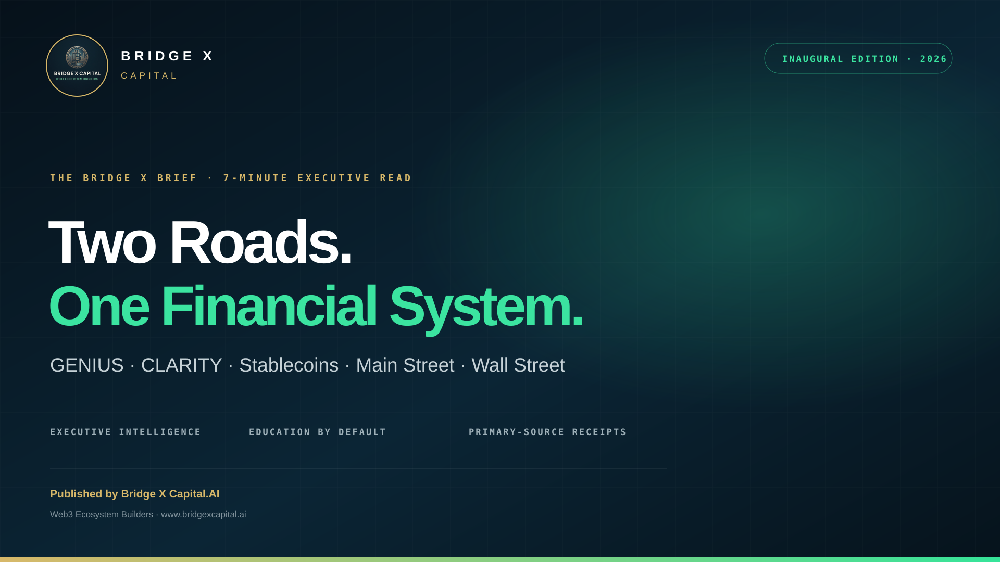

Quick enough to use
Clear analysis for leaders who need the signal without losing the substance.
A fast, evidence-backed briefing on the rules, rails, institutions and technologies reshaping how value moves—from Main Street to Wall Street.
How a tokenized position can earn, collateralize and finance another deployment—and how risk compounds through the stack.
Read Edition 003 →
Why tokenized finance cannot scale on assets alone—and why reusable, privacy-aware verification sits underneath institutional adoption.
Read Edition 002 →
GENIUS, CLARITY, stablecoins—and the infrastructure connecting Main Street to Wall Street.
Read Edition 001 →
Clear analysis for leaders who need the signal without losing the substance.
Primary sources and direct links accompany material claims so readers can verify the record.
We translate policy, technology and capital-market infrastructure into practical meaning.